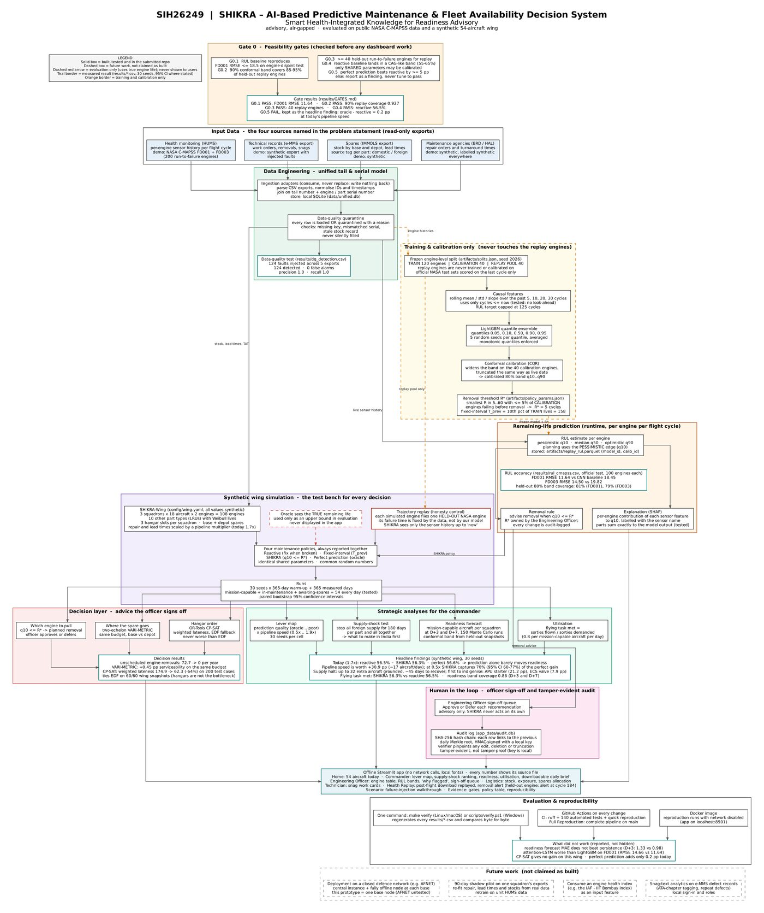
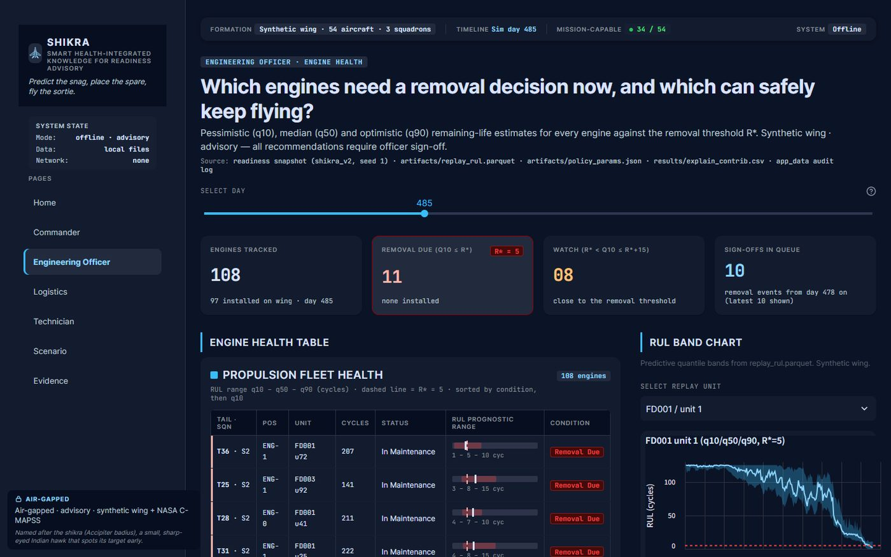

SHIKRA: predicting engine removals for an aircraft fleet
- Problem
- Aircraft availability suffers when maintenance is reactive. Can remaining-life predictions decide when to remove an engine, and does that keep more aircraft flyable?
- My role
- Team lead of a 6-member team that built both SHIKRA and ShadowCat. Here I built the remaining-life model, the data ingestion and quarantine, and the audit log.
- Links
- RepoModel cardLimitations
Try it: one held-out engine, cycle by cycle
Real predictions from the committed model on engines it never trained or calibrated on. The band is the conformal 80% interval. SHIKRA advises removal when the pessimistic edge (q10) reaches R* = 5 cycles.
Remaining-life model
Data and splits
NASA C-MAPSS turbofan degradation data. The wing model trains on FD001 and FD003 with a frozen, engine-disjoint split (seed 2026): 120 training engines, 40 for conformal calibration, and 40 held out for the fleet simulation only. Nothing about the held-out engines touches training, calibration or the removal threshold.
Model
- Causal rolling features over the past 5, 10, 20 and 30 cycles (last value, mean, std, slope), so a prediction never sees the future.
- LightGBM quantile regressors at 0.05, 0.10, 0.50, 0.90 and 0.95, each an ensemble of 5 seeds; target capped at 125 cycles (the standard piecewise convention).
- Inductive conformal calibration on the 40 calibration engines widens the raw quantiles into intervals with the coverage they claim.
Results on the official test sets (last cycle per engine)
| Subset | Babu 2016 CNN | SHIKRA RMSE | MAE | RMSE when RUL ≤ 30 | Engines |
|---|---|---|---|---|---|
| FD001 | 18.45 | 11.64 | 8.40 | 3.37 | 100 |
| FD002 | 30.29 | 13.45 | 9.47 | 3.49 | 259 |
| FD003 | 19.82 | 14.50 | 9.83 | 2.60 | 100 |
| FD004 | 29.16 | 14.33 | 9.48 | 7.39 | 248 |
RMSE against true RUL capped at 125. Uncapped RMSE is in the model card (12.95 on FD001).
Do the intervals mean what they say?
| Split | Nominal | Raw quantiles | After conformal | Mean width |
|---|---|---|---|---|
| FD001 test | 80% | 61% | 81% | 30.9 cycles |
| FD003 test | 80% | 57% | 79% | 30.1 cycles |
| Held-out replay (400 points) | 80% | 56% | 81.8% | 24.8 cycles |
Raw LightGBM quantiles were overconfident: an "80%" band held the true value only 56 to 61% of the time. Conformal calibration fixed that without retraining.
What did not work
- A 2-layer temporal attention LSTM matched the RMSE but scored about 2× worse on the NASA penalty metric on FD003, so LightGBM stayed.
- A fleet-readiness forecast lost to a simple persistence baseline (MAE 2.274 vs 1.552 at 7 days). It is reported, not hidden.
From predictions to decisions

Fleet simulation
A discrete-event simulation of a synthetic 54-aircraft wing, 30 seeds, with common random numbers so every policy faces the same failures. The removal threshold R* was chosen on calibration engines only.
| Policy | Serviceability | 95% CI | Unscheduled removals / yr |
|---|---|---|---|
| Reactive | 56.5% | [56.0, 56.9] | 72.7 |
| Fixed-interval preventive | 47.6% | [47.2, 48.1] | 13.2 |
| SHIKRA (q10 ≤ R*) | 56.3% | [55.7, 56.8] | 0.0 |
| Oracle (perfect prediction) | 56.6% | [56.1, 57.2] | 0.0 |
Scheduling and supply
- Hangar scheduling with OR-Tools CP-SAT: 64% less weighted tardiness than earliest-due-date on 200 synthetic instances (174.9 → 62.3), never worse. On the simulated wing it tied on 60 of 60 snapshots, which showed bays are not the bottleneck.
- Two-echelon VARI-METRIC spares positioning and a 180-day foreign supply halt stress test that ranks which parts to make locally first.
Audit log
Every Approve or Defer decision by an engineering officer is appended to an HMAC-SHA-256 chain in a local database. Editing any past record breaks every hash after it. It is tamper-evident, not tamper-proof: the key lives on the machine, which the limitations file says plainly.

Quality and reproducibility
- 140 automated tests, run in CI on every push.
- Every committed result regenerates byte-for-byte from one command (
make verify, about 73 minutes; an 8-minute check without the long supply-shock run).
git clone https://github.com/muthukkumaranb/shikra.git && cd shikra
pip install -r requirements.txt # Python 3.11
make verify # regenerates and diffs every resultWhat I'd do next
- Model the spare-engine pipeline explicitly in the optimiser, since that is where readiness is actually lost.
- Move the audit key to hardware-backed storage so the log becomes tamper-resistant, not just tamper-evident.